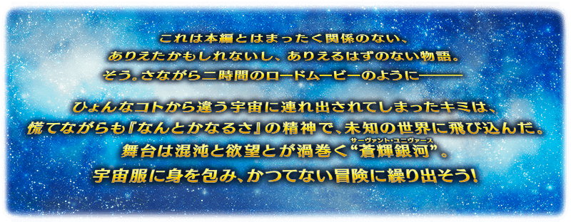

舉辦期間限定活動「復刻:Saber Wars２ ～邁向初始的宇宙～ 輕量版」！
在從者生活的宇宙“蒼輝銀河”，奔走各個行星展開戰鬥！
本活動中將巡迴多顆行星，收集資源以進行故事。
向“蒼輝銀河”存在的星星冒險，見識故事的收尾吧！
※本頁面皆為開發中圖片。會有與實際圖片相異的情況。 ※本活動是再調整在2019年舉辦的期間限定活動「Saber Wars２ ～邁向初始的宇宙～」使之更容易遊玩的「復刻輕量版活動」。 ※一部份的關卡為日後開放。
◆活動舉辦期間◆
2021年1月6日(三) 17:00～1月20日(三) 11:59
◆活動參加條件◆
滿足以下條件的御主才能參加
・通過「終局特異點」
※不需要通過亞種特異點(從Ⅰ到Ⅳ)及第2部序幕(プロローグ)「序」以後的主線關卡。
◆關於在上次舉辦時獲得過報酬的注意◆
在2019年舉辦的期間限定活動「Saber Wars２ ～邁向初始的宇宙～」獲得過特定報酬的情況，會如以下變化。
・在上次舉辦時獲得過「聖杯」的情況，本活動中會以「傳承結晶」代替「聖杯」做為通過報酬。
・在上次舉辦時獲得過魔術禮裝「迦勒底艦長」的情況，本活動中可獲得「魔力稜鏡」代替魔術禮裝「迦勒底艦長」。
・在上次舉辦時獲得過「指令紋章」的情況，本活動的對象關卡中可獲得稀有稜鏡或魔力稜鏡代替「指令紋章」。
・在上次舉辦時獲得過「★5(SSR)謎之女主角X」靈衣開放權的情況，無法靠本活動的活動道具交換獲得「★5(SSR)謎之女主角X」的靈衣開放權。
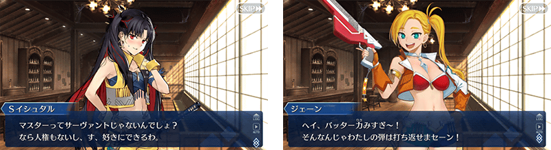
在「Fate/Grand Order」官方網站內首頁公開期間限定活動「復刻:Saber Wars２ ～邁向初始的宇宙～ 輕量版」的電視廣告。
敬請確認。
動畫製作：A-1 Pictures
 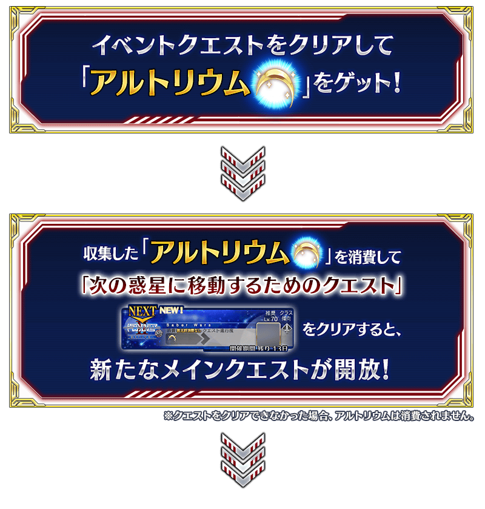
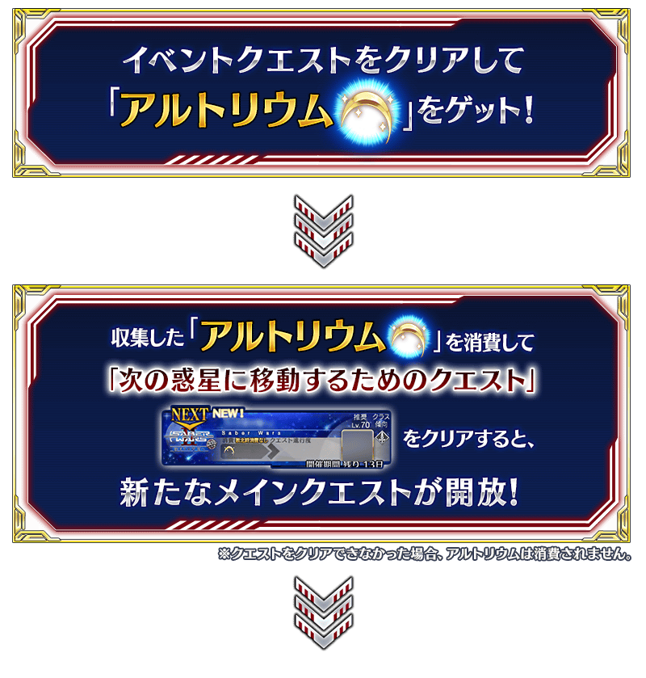


在活動道具交換入手「賞金首的通緝令」的話，會開放賞金首關卡地點。入手「賞金首的通緝令」，挑戰宇宙的無頼漢們吧！
另外，擊倒特定敵人的話，可獲得活動道具「女神經典」。
入手「女神經典」的話，可開放女神經典關卡。
※「賞金首的通緝令」會在活動結束後的2021年1月20日(三) 11:59消失。 ※「女神經典」會在活動結束後的2021年1月20日(三) 11:59消失。

期間限定活動「復刻:Saber Wars２ ～邁向初始的宇宙～ 輕量版」中會發生達成「收集特定的道具一定數以上」「擊倒特定的敵人」等各式各樣條件的話，可獲得豪華報酬獲得的任務！
另外，對應任務的達成狀況會開放新的任務等。
攻略任務，邊獲得達成報酬邊推進主線關卡吧！
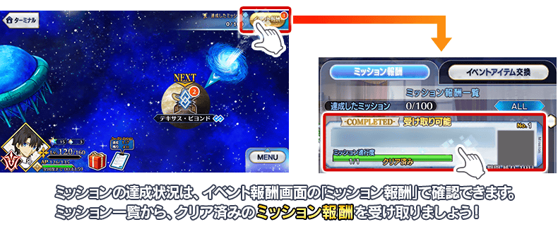
※請注意光滿足通過條件無法入手報酬。 ※請注意未領取任務報酬的話，不會開放新的任務等。
期間限定活動「復刻:Saber Wars２ ～邁向初始的宇宙～ 輕量版」限定的魔術禮裝「迦勒底艦長(キャプテン・カルデア)」登場！
通過特定主線關卡的話，可入手新魔術禮裝「迦勒底艦長」。
請務必得到期間限定的貴重魔術禮裝！
※已經持有魔術禮裝「迦勒底艦長」的情況，可獲得魔力稜鏡100個做為代替魔術禮裝的報酬。

通過特定活動關卡的話，會強化「★5(SSR)謎之女主角X(Assassin)」的一部份技能做為報酬。
就算未持有「★5(SSR)謎之女主角X(Assassin)」或未召喚的情況，先通過本關卡後在入手時會是強化一部份技能的狀態。
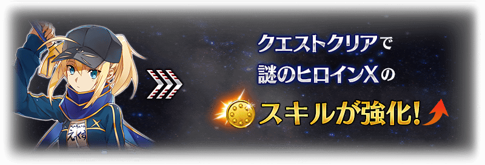
※強化「★5(SSR)謎之女主角X(Assassin)」一部份技能的關卡也可幕間物語挑戰。 ※有在上次舉辦時或從幕間物語通過該關卡的情況，本活動中不會發生關卡。

【1月13日(三) 17:00追記】
以通過期間限定活動「復刻:Saber Wars２ ～邁向初始的宇宙～ 輕量版」所有任務的御主做為對象，開放高難易度的「挑戰關卡」。
「挑戰關卡」就算通過後也不會消失，可以變更從者和概念禮裝的組合等後無限次挑戰。
※關卡通過報酬、戰利品、御主EXP、魔術禮裝EXP、絆點數只可在初次通過時獲得。
◆挑戰關卡開放時間◆
2021年1月13日(三) 17:00～
◆挑戰關卡參加條件◆
滿足以下條件的御主才能參加
・通過期間限定活動「復刻:Saber Wars２ ～邁向初始的宇宙～ 輕量版」的所有任務
◆挑戰關卡初次通過報酬◆
傳承結晶 1個
超值攻略方法・其1
本活動的期間中，下表的從者在活動關卡中會得到「自身的攻擊威力提升」與「絆點數獲得量提升」的加成！
強化對象從者，挑戰活動吧！
※活動加成的效果量因從者而異。
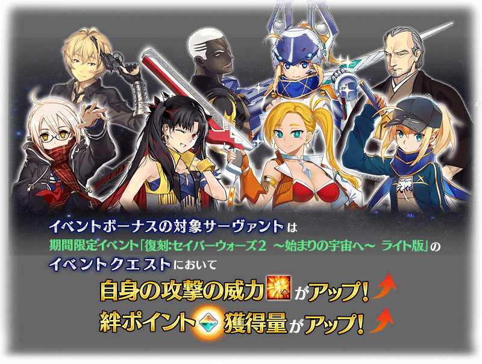
【活動加成的效果與對象從者】
| 自身的 攻擊威力 |
絆點數 獲得量 |
職階 | 稀有度 | 從者名 |
|---|---|---|---|---|
| ＋100% | ＋50% | Archer | ★★★★ | 災星簡 |
| Assassin | ★★★★★ | 謎之女主角X | ||
| Avenger | ★★★★★ | 太空・伊絲塔 | ||
| ＋50% | ＋20% | Saber | ★★★★★ | 阿提拉 |
| ★★★★★ | 西格魯德 | |||
| ★★★★★ | 紅閻魔 | |||
| ★★★★ | 高文 | |||
| ★★★★ | 柳生但馬守宗矩 | |||
| Archer | ★★★★ | Emiya〔Alter〕 | ||
| ★★★ | 比利小子 | |||
| Lancer | ★★★ | 豹人 | ||
| Caster | ★★★★★ | 安娜塔西亞 | ||
| Berserker | ★★★★★ | 項羽 | ||
| ★★★★★ | 謎之女主角X〔Alter〕 | |||
| ★★★★ | 玉藻貓 | |||
| ★★★★ | 蘭斯洛特 | |||
| Alterego | ★★★★★ | 帝王花 | ||
| Foreigner | ★★★★ | 謎之女主角XX | ||
| ＋30% | ＋20% | Saber | ★★★★ | 阿爾托莉亞・潘德拉剛〔Lily〕 |
| ★★★★ | 伊莉莎白・巴托里〔Brave〕 | |||
| ★★★★ | 尼祿・克勞狄烏斯 | |||
| Archer | ★★★★★ | 伊絲塔 | ||
| ★★★★ | Emiya | |||
| Lancer | ★★★★★ | 艾蕾修卡 | ||
| ★★★★ | 伊莉莎白・巴托里 | |||
| Caster | ★★★★ | 伊莉莎白・巴托里〔萬聖節〕 | ||
| Assassin | ★★★★ | 沖田・J・總司 | ||
| Berserker | ★★★★★ | 土方歲三 |
※就算成為對象從者也會有未在本活動的主線劇本登場的情況。
※自1月4日(一) 17:00，在從者選擇畫面和從者強化畫面等，追加活動加成篩選器。
由於是只顯示於活動活躍從者的便利功能，敬請活用。
超值攻略方法・其2
本活動的期間中，只限「★5(SSR)阿爾托莉亞・潘德拉剛(Saber)」在活動關卡在活動關卡中會得到活動道具「阿爾托莉元素」「掉落獲得數提升」的加成。
※請注意各關卡的道具掉落率並非100％。
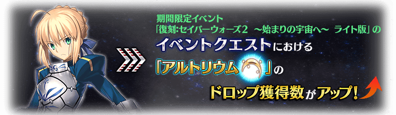
超值攻略方法・其3
裝備期間限定概念禮裝讓攻擊威力提升！
裝備可靠活動道具交換入手的活動限定概念禮裝「★5(SSR)双つ星の歌姫」的話，期間限定活動「復刻:Saber Wars２ ～邁向初始的宇宙～ 輕量版」的活動關卡中自身的攻擊威力會提升。
另外，裝備可靠活動任務報酬入手的活動限定概念禮裝「★5(SSR)ベスティア・デル・ソル」的話，期間限定活動「復刻:Saber Wars２ ～邁向初始的宇宙～ 輕量版」的活動關卡中我方全體<含候補>的攻擊威力會提升。
並且，裝備活動限定概念禮裝「★5(SSR)双つ星の歌姫」及「★5(SSR)ベスティア・デル・ソル」的話，活動道具「阿爾托莉元素」的掉落獲得數會提升。
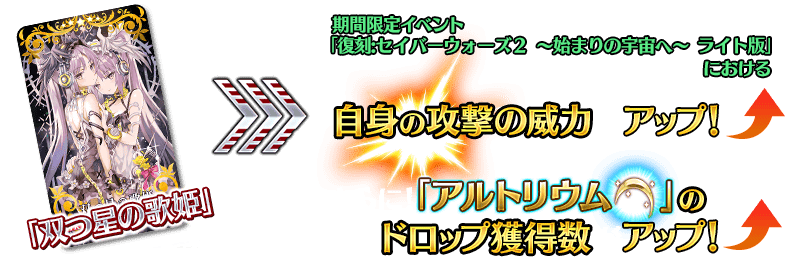 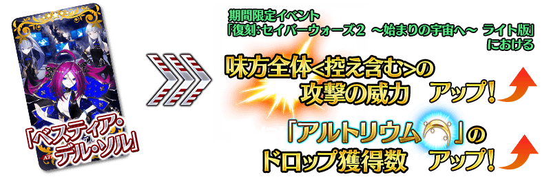
超值攻略方法・其4
裝備期間限定概念禮裝讓活動道具的掉落獲得數提升！
裝備在聖晶石召喚Pick Up的期間限定概念禮裝「★5(SSR)プリンセス・オブ・アンコ」「★4(SR)プラネット・ロック」「★3(R)文武一道」的話，活動道具「金Saber徽章」「銀Saber徽章」「銅Saber徽章」各自的掉落獲得數會提升。
※請注意各關卡的道具掉落率並非100％。
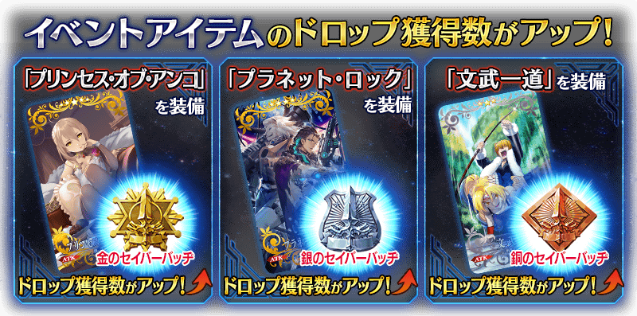
| 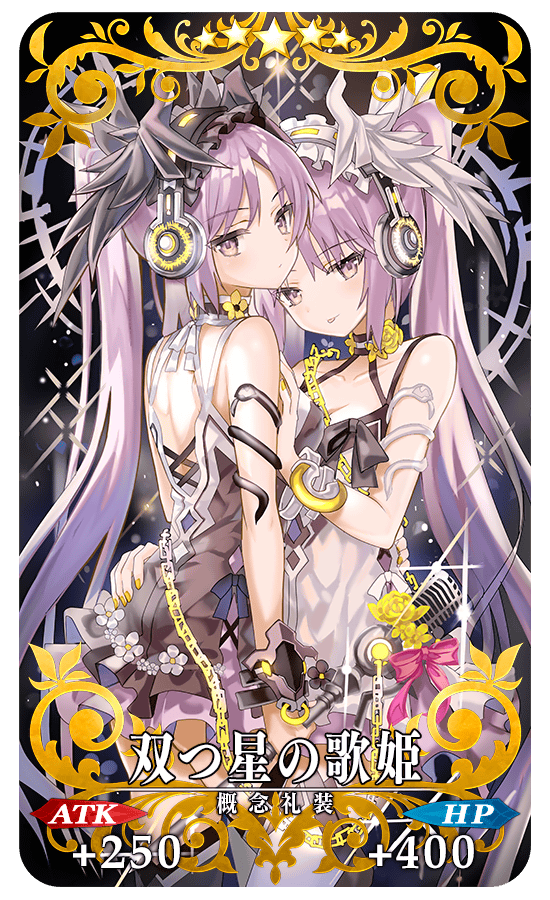 |
★★★★★SSR
|

|
★★★★★SSR
|
◆得到活動限定概念禮裝EXP卡「はじめてのカレー」「謎の物質γ」吧！◆
做為任務的達成報酬，可入手能大幅強化概念禮裝的EXP卡！
請務必藉此機會，強化喜愛的概念禮裝！

| 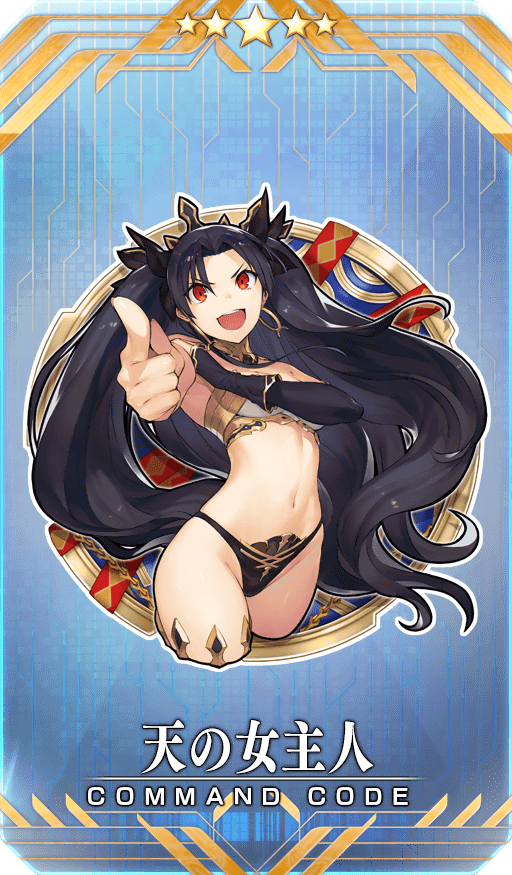 |
【活動限定】
|

|
★★★★SR
|

|
★★★R
|
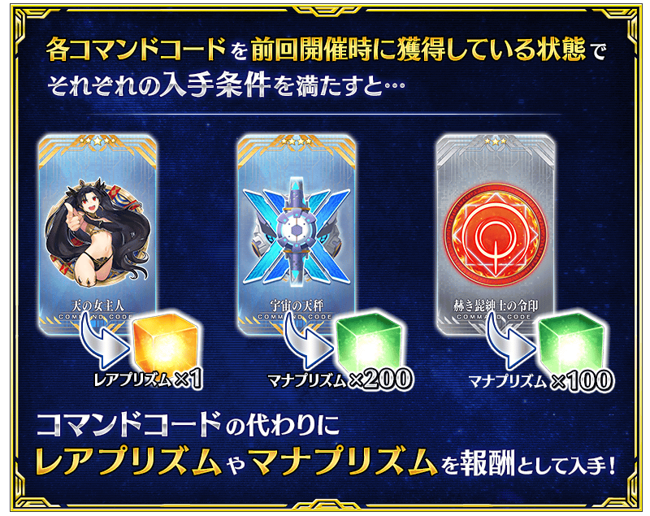
◆關於活動報酬指令紋章的注意◆
在2019年舉辦的期間限定活動「Saber Wars２ ～邁向初始的宇宙～」中獲得過同樣指令紋章的情況，可獲得稀有稜鏡或魔力稜鏡代替指令紋章。
※對象指令紋章的稀有度對應的可獲得報酬有異。
※就算靈基變還(販賣)在期間限定活動「Saber Wars２ ～邁向初始的宇宙～」獲得過的各指令紋章而消失的情況，在期間限定活動「復刻:Saber Wars２ ～邁向初始的宇宙～ 輕量版」中的報酬仍會變化成稀有稜鏡和魔力稜鏡。
活動道具可自點擊管理室(ターミナル)畫面右上「活動報酬」的「活動道具交換」畫面，交換以下的道具。
※簡易靈衣「謎之女主角Z」開放權在通過本活動的主線關卡後才能交換。 ※關於英靈結晶・流星之芙芙ALL★4(HP)、英靈結晶・日輪之芙芙ALL★4(ATK)，在通過本活動的主線關卡後才能交換。
◆交換期間◆
2021年1月6日(三) 17:00～1月27日(三) 11:59
※「阿爾托莉元素」在活動期間結束後可交換成QP。
※活動道具交換期間結束後「金Saber徽章」「銀Saber徽章」「銅Saber徽章」「阿爾托莉元素」會消失。
※「賞金首的通緝令」會在活動結束後的2019年11月13日(三) 11:59消失。
◆能用金Saber徽章交換的道具◆
|
【靈衣開放權】
【活動限定概念禮裝】
【技能強化＆靈基再臨素材】
【靈基再臨素材】
【其他道具】 |
◆能用銀Saber徽章交換的道具◆
 |
【活動限定概念禮裝】
【技能強化＆靈基再臨素材】
【靈基再臨素材】
【其他道具】 |
◆能用銅Saber徽章交換的道具◆
|
【活動限定概念禮裝】
【技能強化＆靈基再臨素材】
【其他道具】 |
◆能用阿爾托莉元素交換的道具◆
 |
【活動關鍵道具】
【其他道具】 |

做為期間限定活動「復刻:Saber Wars２ ～邁向初始的宇宙～ 輕量版」的報酬，「★5(SSR)謎之女主角X(Assassin)」的靈衣開放權登場！
可入手上述靈衣開放權做為活動道具交換的報酬。
另外，想要靈衣開放的話，除了靈衣開放權外必須再加上一些開放條件。
※活動道具交換中交換的靈衣開放權，在期間限定活動「Saber Wars２ ～邁向初始的宇宙～」交換過靈衣開放權的情況，本活動中無法交換，也無法獲得稀有稜鏡。
◆有關靈衣開放權的注意◆
※本次追加的「★5(SSR)謎之女主角X(Assassin)」的靈衣是只有外觀的變化，語音沒變化的「簡易靈衣」。
※「★5(SSR)謎之女主角X」的靈衣開放權，只限期間限定活動「復刻:Saber Wars２ ～邁向初始的宇宙～ 輕量版」的活動舉辦期間才能入手。
※請注意未持有「★5(SSR)謎之女主角X(Assassin)」的情況，可入手靈衣開放權。但無法進行靈衣開放。


「靈衣開放」是自強化畫面進行。
※「靈衣開放」後會自動切換戰鬥角色和圖示。若想回到「靈衣開放」前的狀態和變成其他再臨階段的情況，可自從者詳細畫面變更。 ※進行「靈衣開放」不會讓職階和能力等有所變化。

介紹開放簡易靈衣「謎之女主角Z」「★5(SSR)謎之女主角X(Assassin)」的寶具演出！
在「Fate/Grand Order」官方網站內的公告中，以影片公開寶具演出，敬請確認。

【1月6日(三) 17:00追記】
強化「★4(SR)柳生但馬守宗矩」的特別關卡「從者強化關卡」，在迦勒底之門永久追加。
不僅進行對象從者的強化，也可獲得聖晶石做為關卡通過報酬。
※從者強化關卡請注意在沒有文字冒險部份。
◆追加時間◆
2021年1月6日(三) 17:00～
◆開放條件◆
持有的強化對象從者，必須使其最終再臨。
※未持有對象從者的話，不會出現關卡。
※關卡沒有舉辦期限。

其他還有，期間限定「復刻 Saber Wars２Pick Up召喚」同時舉辦！
關於詳情，請自下述橫幅確認。
■「復刻 Saber Wars２Pick Up召喚」詳細情報